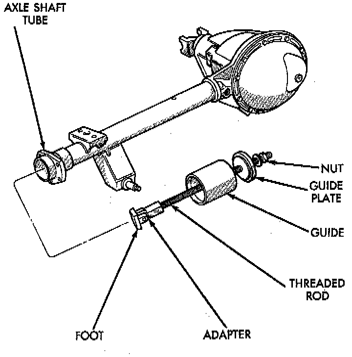
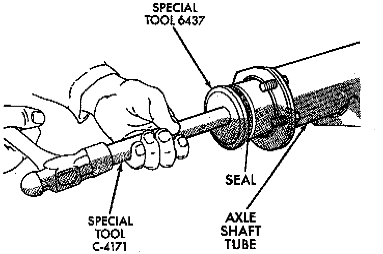

Axle Bearing: Service and Repair

REMOVAL
1. Remove the axle shaft.
2. Remove the axle shaft seal from the end of the axle shaft tube with a small pry bar.
NOTE: The seal and bearing can be removed at the same time with the bearing removal tool.
3. Remove the axle shaft bearing from the axle tube with Bearing Removal Tool Set 6310 using Adapter Foot 6310-5, or equivalents.
4. Inspect the axle shaft tube bore for roughness and burrs. Remove as necessary.
NOTE: Do not install the original axle shaft seal. Always install a new seal.

INSTALLATION
1. Wipe the axle shaft tube bore clean.
2. Install axle shaft bearing with Installer 6436 and Handle C-4171, or equivalents. Ensure that the part number on the bearing is against the installer.
3. Install the new axle shaft seal with Installer 6437 and Handle C-4171, or equivalents.
4. Install the axle shaft.